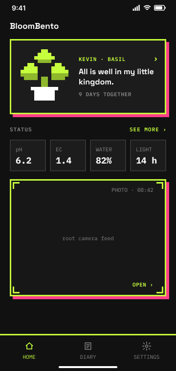
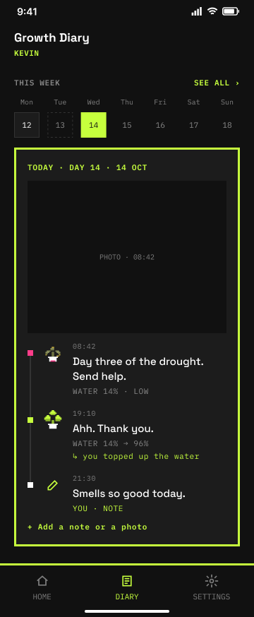
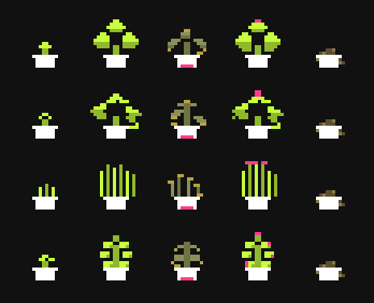

BloomBento
A smart herb box with a plant that talks. I shaped the concept with the founder, then designed and built the app from 0 to 1 with AI.
The app, running on my iPhone in Expo Go · sample data
- Role
- Co-founder
Concept, product design & app development - Team
- Me: concept + the whole digital product
The founder: concept + hardware - Time
- Aug 2026 – now
- Status
- App V2 running on iPhone
V3 designed
Launch target: late Nov 2026
We started from a product that already worked
Veggi, a smart plant box, became a hit in China. What Veggi does best: its plants talk. Each plant has lines for different moments, called flavor text. It makes a plant feel like someone, not something.
We wanted to bring that feeling to Europe.
Every decision has one goal
A flavor text library, and each plant is a character
The plant speaks in its own words. Thirsty, growing, ready to harvest: each moment has its own lines. 240 lines in total.
4 plants, 4 personalities. Same moment, different words. You can tell who's talking.
Designed in V3 · coming to the app in the next update“9 days together”, not “Day 9”
The home screen counts time like a relationship, not like a timer.
V3 design
A diary of growing together
If the plant feels alive, the time you spend together matters. So the diary does two things:
- First, it records how you and your plant grow together.
- Second, it keeps the plant's data, day by day.

Growing plants can be boring
You water, you wait, nothing happens.
BloomBento makes it feel alive. Your plant reacts, talks back, and grows with you.
From an idea to a running app
Plan the core
With the founder, I first agreed on the core features. Then I sketched a wireframe.
Create the look
I collected styles I liked and chose pixel art: flat, playful, a bit Y2K. AI generated the plant images in that style. I chose pink and yellow as the main colors.
Grow the character
From one plant image, I made every state: seed, growing, healthy, thirsty, ready to harvest. For all 4 plants. This became the brand.
Bring it together in Figma
I gave the whole brand to Claude, mixed it with my wireframe, and finished the design in Figma.
Build one page at a time
Claude Code writes one page. I run it on my iPhone with Expo Go and check every small change. If it matches what I had in mind, we move on. If not, I tell it what to fix. Then repeat.

What changed along the way
- My design showed “~12 g ready to harvest”. But weighing the harvest turned out to be hard for the hardware. The founder and I decided to remove it in V3. Many decisions changed like this, once we knew what the technology could really do.
- On my phone, the keyboard covered the diary note box. We fixed it so the page moves up when you type.
V3, then launch
V2 is running. V3 brings the plant voices, a new home screen and a new diary. Launch on Google Play: late November 2026.